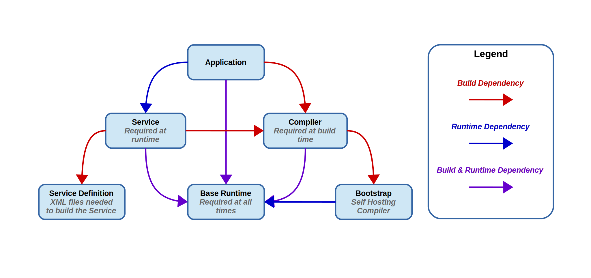
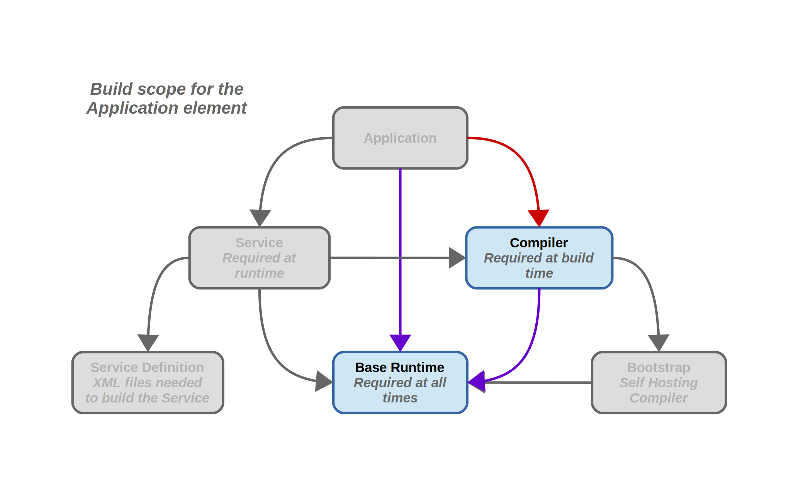

Dependency model
Elements in the data model are related by their dependencies. In BuildStream, there are two types of relationship that an Element may have with a dependency, build and runtime dependencies. More often than not, an element will require its dependency both to build and also at runtime.
Consider a simple build scenario where you want to build an application, which requires a service be present in order to function properly at runtime, a compiler that need only be present at build time, and a runtime environment or base system which must be required all the time:
Note that in BuildStream we are only concerned with element level granularity
in our dependency model, and there is no way to depend on only a part of an element’s
output artifact. Instead we can employ compose and
filter elements in conjunction with split rules
to achieve sub artifact granularity at build and deploy time.
When developing BuildStream, it is important to understand the distinction
between dependency types and element Scope,
which acts as a selector of which elements to consider in the dependency
graph of a given element when performing recursive activities.
Scope
Scope.ALL
In the
Scope.ALLscope, all elements are considered.This is used in some cases to forcefully fetch, pull or build all dependencies of a given element, even when not all of them are needed.
This scope simply includes all of the dependencies, including the element itself.
Scope.RUN
In the
Scope.RUNscope, only elements which are required to run are considered, including the element itself. Note that these are transitive - the service also requires the base runtime.This is used when for example, launching a
bst shellenvironment for the purpose of running, or in any case we need to consider which elements are required to run.
Scope.BUILD
In the
Scope.BUILDscope, only elements which are required to build are considered, excluding the element we intend to build.Note that build type dependencies are not transitive, which is why the Bootstrap element is not selected when pulling in the Compiler to build the Application.
Further, note that we still follow the Compiler dependency on the Base Runtime, this is because when we depend on an element for the purpose of building, we expect that element to run and as such we include all of the runtime dependencies of build dependencies when selecting the Scope.BUILD elements.